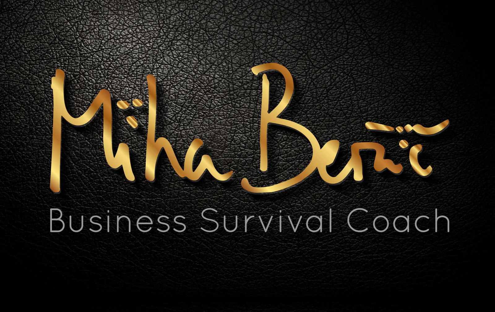

Uporabno znanje
Veščine, ki jih znaš uporabiti tudi takrat, ko ni vse pripravljeno zate.
Znanje za bivanje v naravi. Več samostojnosti. Manj strahu pred divjim. Več prostora za kreativnost, skupnost in izkušnje, ki ostanejo.
Programi za posameznike, družine, mlade in ekipe.
Razišči programe ↓Od osnovnega vikenda do daljše odprave. Programi so zasnovani za začetnike, družine, otroke, ekipe in ljudi, ki želijo zahtevnejšo izkušnjo.
Veščine, ki jih znaš uporabiti tudi takrat, ko ni vse pripravljeno zate.
Manj strahu pred neznanim in več zaupanja v svoje sposobnosti.
Narava odpre prostor za improvizacijo, igro in nove načine razmišljanja.
Z naravo, skupino in sabo — brez odvečnega hrupa vsakdana.
Programi se stopnjujejo od prvega samostojnega bivanja do zahtevnejših preizkušenj z minimalno opremo.

Namenjen začetnikom za prve izkušnje za samostojno 2–5 dnevno bivanje v naravi. Ključna znanja: zavetje, ogenj, voda, divja hrana, orodje in uporaba, vrvi in vozli, prva (samo)pomoč, oprema, ustvarjanje in glasba.
Naučil/a se boš postaviti improvizirana zavetja iz cerad, pončov, palerin ter osnovno zavetje iz popolnoma naravnih materialov (najpogumnejši prespijo v njem).
Naučil/a se boš prižgati ogenj brez vžigalnika, postaviti različna ognjišča, varno kuriti ter pripravljati slastne obroke z uporabo ognja in žerjavice.
Naučil/a se boš najti vodo, jo pripraviti varno za pitje in izdelati filter iz naravnih materialov.
Naučil/a se boš nekaj užitnih rastlin, zelišč, gob, gomoljev. Ter nekaj strupenih vrst, ki jih lahko zamenjaš za užitne.
Naučil/a se boš varno uporabljati in vzdrževati: nož, sekiro, žago (in še katero orodje).
Naučil/a se boš uporabo vrvi in vozlov v različne namene.
Naučil/a se boš uporabljati komplet prve pomoči pri poškodbah, samostojno in pri oskrbi drugih.
Spoznal/a boš vso opremo, ki jo potrebuješ za nekajdnevno bivanje v naravi.
Ob ognju bomo marsikaj ustvarjali (naj ostane presenečenje), ter igrali na različne inštrumente (bobni, ropotulje, piščali, kitara, …).
Je osnovni tečaj prilagojen družinam z otroci. Del programa je prilagojen otrokom, del odraslim. Nekatere aktivnosti pa so skupne. Podajanje znanja in animacijske metode so prilagojene starosti otrok in jih učimo staršem.
Otroci in odrasli imajo del vsebin prilagojen posebej svoji skupini, izbrane naloge pa družina opravi skupaj. Program ohranja ključna znanja osnovnega tečaja, način podajanja pa je prilagojen starosti otrok.
Namenjen vsem, ki so opravili osnovni tečaj (tudi pri drugih ponudnikih) in želijo nadgraditi znanje. Vsak tečaj ima večji poudarek na enem sklopu.
Namenjen vsem, ki gledajo preživetvene oddaje na TV ali spletu – izkusi, doseži in preseži meje svojega uma in telesa – z minimalno opremo. Za psihofizično dobro pripravljene.
Povprašaj za ekstremni tečaj↗Bivanje in preživetje v zimskih razmerah. Povdarek je na gradnji zimskega bivališča iz snega (iglu, kvinzi, snežna jama, …), zimskih ognjiščih, zimskih divji hrani, ohranjanju toplote, prilagoditve telesa na mraz.
Večdnevni programi omogočajo več praktičnega učenja, skupinskih izzivov, ustvarjalnosti in globlji stik z naravo.
 Tabori
Tabori
Primerne za skupine, družine, šole in turistične programe.

Prepoznavanje užitnih, strupenih in tradicionalno uporabnih rastlin.
Povprašaj↗Tematske delavnice za predšolske otroke, ustvarjanje iz naravnih materialov in senzibilizacija.
Povprašaj↗Tematske delavnice za osnovnošolske in srednješolske otroke ter mladostnike.
Povprašaj↗Praktični izzivi, sodelovanje in narava kot okvir za komunikacijo, zaupanje, samoiniciativnost in skupinsko dinamiko.
Povpraševanje
Izkušnje, ki povezujejo naravo, lokalno okolje in neposreden stik z oddaljenimi kraji.

Mednarodna ekspedicija
Povprašaj za odpravo↗Mednarodna ekspedicija
Povprašaj za odpravo↗Manj strahu pred divjim. Več samostojnosti. Več kreativnosti. Več skrbi za naravo.
Black Raven želi ljudem omogočiti pristen stik z naravo, napolniti baterije, razvijati samoiniciativnost in ponovno odpreti prostor za radovednost.

“Miha ima ogromno znanja za predati in se lahko res dosti praktičnih stvari naučiš, če si motiviran.”
— Špela, Sep 2024
Preberi zgodbe ↗Najhitrejši odgovori za izbiro prave izkušnje. Za vse ostalo nam piši neposredno.
Da. Osnovni vikend je zasnovan prav za začetnike in gradi temeljne veščine za samostojno bivanje v naravi.
Začni z osnovnim, če nimaš veliko izkušenj. Nadaljevalni je za poglabljanje posamezne teme, ekstremni za zahtevnejšo izkušnjo, zimski za hladnejše razmere, družinski pa je prilagojen staršem in otrokom.
Del aktivnosti je prilagojen otrokom in staršem ločeno, drugi del pa poteka skupaj kot skupna družinska izkušnja.
Klikni katerikoli gumb za povpraševanje ali piši na info@blackraven.solutions. Pri skupinah, team buildingih in posebnih programih se vsebina lahko prilagodi.
Za termine, skupine, prilagoditve programov in prijave piši neposredno.
info@blackraven.solutions ↗